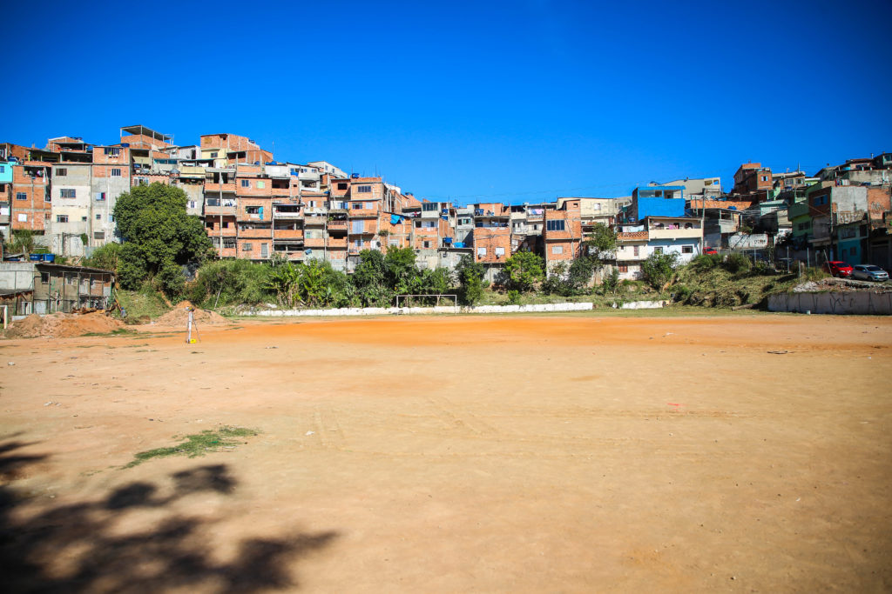

A prefeitura da cidade acaba de anunciar a restauração do campo Sto Savca, com apoio do filantropo Irineu, juntamente com administração da comunidade, o campinho passará por uma restauração: será feito a implementação de gramado, traves novas e uma unidade de treinamento para as crianças da comunidade!
